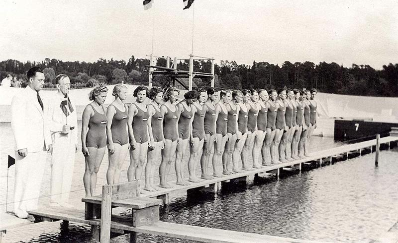
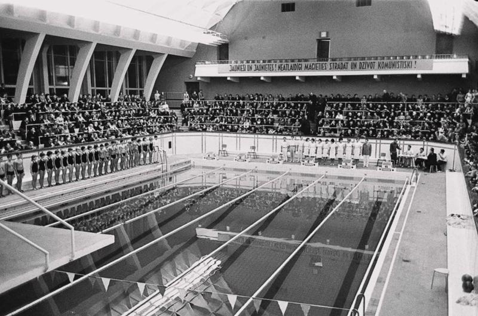
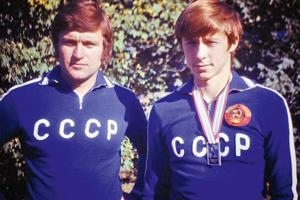
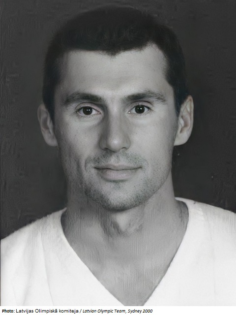

Tuvojas olimpiskās spēles, mūsu Latvijas peldētāji mēģina izpildīt kvotas un tikt uz olimpiskajām spēlēm, Parīzē. Latvija vēl nav saņēmusi medaļas olimpiskajās spēlēs, peldēšanā. Laika gaitā rezultāti ir sākuši uzlaboties, tāpēc šajā rakstā mēs apskatīsim Latvijas peldēšanas vēsturi, jeb kā mēs nonācām līdz šim līmenim.
Peldēšanas veidi un citas nodarbes bija reglamentētas starp dzimumiem. Vīrieši apguva peldēšanu uz vēdera, muguras, sāniem, kā arī niršanu un lēkšanu, kamēr sievietes varēja tikai apgūt peldēšanu uz vēdera. (Enciklopēdija.lv)
Pirmsākumos lielāko ievērību guva garo distanču sacīkstes Daugavas vai Lielupes šķērsošanā vai peldējumā no Dubultiem līdz Majoriem. Pirmās meistarsacīkstes Latvijā notika 1923.gada jūlijā. Pirmajās starptautiskajās sacensībās latvijas izlases peldētāji piedalijās 1937.gada 18.jūlijā, Igaunijā, kur uzvaru izcīnija Igauņi. Slēgto baseinu neesamības dēļ, latviešiem nebija vērojama tik strauja attīstība.(Enciklopēdija.lv)

(Foto avots: Enciklopēdija.lv)
Pirmais slēgtais baseins Latvijā tika uzbūvēts Daugavpilī, vienības namā, 30. gadu otrā pusē. Tur atradās 2 nelieli baseini, bet latgalieši nebija aktīvi peldētāji, tāpēc tas baseins ātri kļuva jau par noliktavu. Aktīvākie peldētāji bija Rīgā un Jelgavā, tāpēc 1958.gadā Rīgā tika uzcelts VEF baseins (Daugavas sporta nama baseins). (Latvijas rādio 1)

(Foto avots: Enciklopēdija.lv)
1989.gada 1.jūnijā, Ķīpsalā atklāja Rīgas Tehniskās universitātes baseinu. Tā ir visnozīmīgākā sacensību norišu vieta mūsdienās un arī lielākais baseins Latvijā. (Enciklopēdija.lv)
Latvijas vēsturē ievērojamākais peldētājs ir Arsens Miskarovs. Viņš ir dzimis un trenējies Jelgavā. Joprojām Latvijā viņu neviens nav pārspējis, viņš ir daudzkārtējais PSRS čempions, Eiropas un pasaules čempionātu sudrabu godalgu ieguvējs. 1980.gadā vienu olimpisko spēļu laikā viņš izcīnija trīs medaļas – divas sudraba un bronzas. (Enciklopēdija.lv)

(Foto avots: Enciklopēdija.lv)
Pēc neatkarības atjaunošanas Artūrs Jakoļevs 1992.gada Pasaules kausa Parīzes posmā izcīnija bronzas medaļu 50 metru tauriņstila distancē. (Enciklopēdija.lv)

(Foto avots: olympedia.org)
Šobrīd kā labākos Latviešu peldētājus var izcelt Daniilu Bobrovu, Ievu Maļuku, Ģirtu Feldbergu, Gabrielu Ņikitinu, Kristapu Miķelsonu un Nikolasu Deičmanu. Kopumā Latvijas peldētāji ir snieguši nozīmīgu ieguldījumu peldēšanas sportā gan Latvijā, gan starptautiskā mērogā, neskatoties uz salīdzinoši ar citām valstīm zemiem rezultātiem, bet mēs turpinām attīstīt šo sporta veidu un cenšamies popularizēt Latvijas vārdu pasaulē.